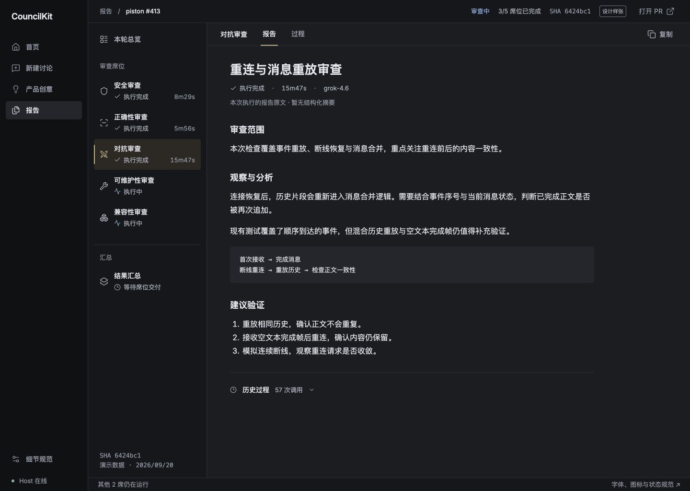

字体：清楚的级差，稳定的中英混排
标题 26/34 · 章节 18/28 · 正文 16/28 · 控件 14/20 · 元信息 13/20。只用 400 / 500 / 600 三档字重。
重连与消息重放审查
观察与分析
报告先呈现结果，再提供已保存过程。
对抗审查 · 报告 · 过程
6424bc1 · prepareReconnect()
正在确认本地字体加载…
中文阅读样张
连接恢复后，历史片段会重新进入消息合并逻辑。需要结合事件序号与当前消息状态，判断已完成正文是否被再次追加。
正文使用常规字重，中文不加字距；英文与数字使用 Inter，代码使用独立的等宽字体。
首次接收 → 完成消息 断线重连 → 重放历史 → 检查正文一致性
8m29s 15m47s 45m00s
字号开关只改变这段样张，不修改交付 Token。耗时数字启用 tabular-nums。
图标：同一套笔画，三种不同语义
Lucide 1.47.0 · 职责与工具 18px · 状态 14px · stroke-width 1.75。职责图标不使用“勾”来暗示正确性通过。
shieldscan-lineswordswrenchboxeslayers-2常用操作
copyexternal-linkchevron-downsearchsettings-2panel-left-close职责 = 前导线性图标 执行 = 小状态图标 + 文字 选择 = 黄铜侧线 / Tab 下划线
颜色：表面分层，文字对比可核对
主要文字组合最低 5.11:1；49 组文字与控件边界组合已按不透明 sRGB Token 计算。装饰分隔线不承担控件边界。此结果不等于整页无障碍认证。
#101113#16171A#1B1D21#23262C#2C2924#E7E9EE#B2B7C2#929AA7#C9B18A#8CB4E8#ED969B#ACC9F3| 文字 Token | 导航底 | 正文底 | 浮起表面 | 选中底 |
|---|---|---|---|---|
| text | 15.55:1 | 13.89:1 | 12.48:1 | 11.92:1 |
| secondary | 9.40:1 | 8.39:1 | 7.54:1 | 7.20:1 |
| tertiary | 6.66:1 | 5.95:1 | 5.34:1 | 5.11:1 |
| accent | 9.12:1 | 8.15:1 | 7.32:1 | 6.99:1 |
| running | 8.82:1 | 7.88:1 | 7.08:1 | 6.77:1 |
| error | 8.49:1 | 7.58:1 | 6.81:1 | 6.51:1 |
交互状态：选中、焦点与执行互不混淆
全局“报告”使用中性选中底；黄铜只强调当前席位和 Tab。键盘焦点采用独立蓝色轮廓，不能被选中态吞掉。
复制和输入框仅用于检查组件交互，不操作任何 Run。
选定工作台：固定三栏，统一视觉细节
全局导航 184 · 席位导航 248 · 上下文栏 48 · 主视图栏 48 · 原文宽度上限 760。下图来自同一套字体与 SVG 的真实浏览器渲染。

位置稳定
总览、已完成、运行中、失败、修复都使用同一席位入口。桌面不再重复显示席位下拉。
完成不等于通过
完成使用中性色 Check 和明确文字；蓝色属于运行、玫瑰红属于失败。无结构化 verdict 就读原文。
细节可以直接交付
字体文件、SVG、Token JSON/CSS、对比度数据和状态映射都保存在此目录，前端可逐项核对。